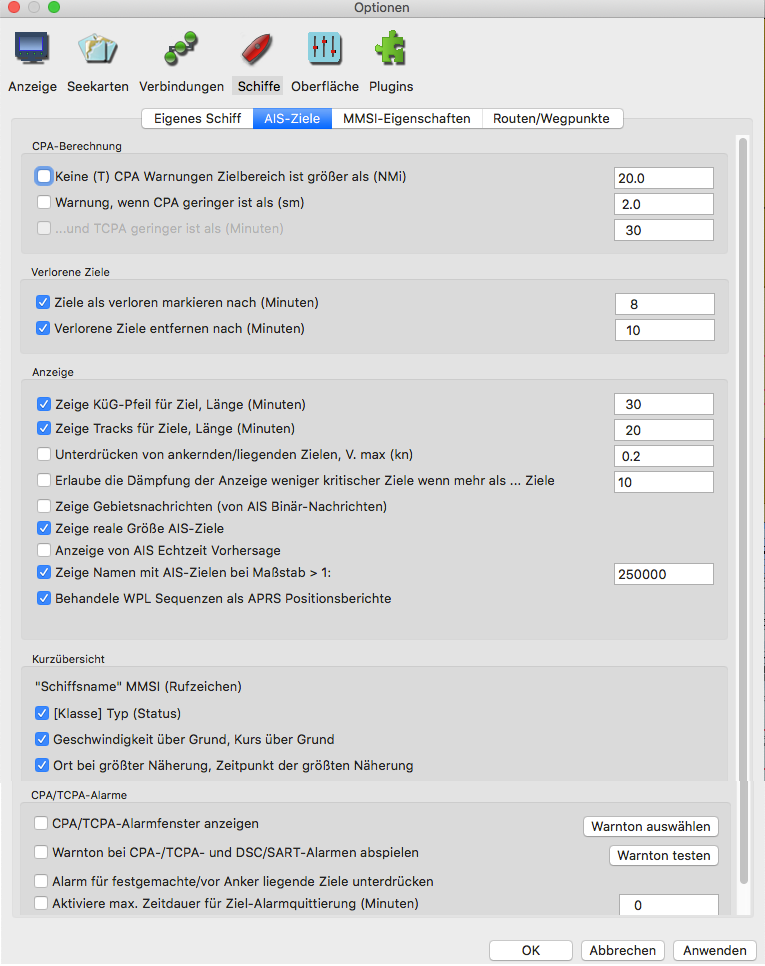

Einstellungen Schiffe
Lasche "Eigenes Schiff"

Bild in der Grundeinstellung für Eigenes Schiff
Voraus-Anzeige KüG-Pfeil (in Minuten): (COG, Course over Ground) Zeigt eine rote gestrichelte Linie vor Ihrem Boot mit aktuellem Kurs-über-Grund
und endet in einem Punkt, an dem Sie bei aktueller Geschwindigkeit in der hier festgelegten Zeit in Minuten sind. 6 Minuten sind hier ein guter Startwert. Hat Ihr Schiff
dann eine Geschwindigkeit (SOG, Speed over Ground) von 10 kn, dann ist die Linie 1 Seemeile lang.
Ist in NMEA Datenstrom ein Kurs-Sensor verfügbar mit Abweichung von COG, wird dies als feinere Linie mit kürzeren Strichen und einem Kreis am Ende angezeigt:
Boot-Symbol Type
Ist ein anderer Typ als Normal gewählt, ändert sich der Fensterinhalt wie im Bild unten:
Für maßgerechte Bitmap oder Vektor werden die Daten des Bootes und die darauf bezogenen Maße des GPS-Antennen-Einbauortes angegeben. Die zu machenden Einstellungen
sind selbst erklärend. GPS Abweichung von Mittschiffs (m) ist positiv nach Steuerbord und negativ nach Backbord. Min. Bildschirm (mm) ist die Größe des
Eigenen-Schiffs-Symbols auf dem Bildschirm.
Der maßstabgerechte Vektor ist eine grobe Vektorgrafik. Der Punkt steht für den GPS-Antennenort.

Radar-Ringe anzeigen Sie werden als rote Ringe um Ihre GPS Position gezeigt und können vielfach nützlich sein, z.B. beim Umfahren von Gefahrenstellen. Die Einstellungen sind (hoffentlich) intuitiv.
Tracks sind hier beschrieben.
Lasche "AIS-Ziele"

Mehr über AIS hier.